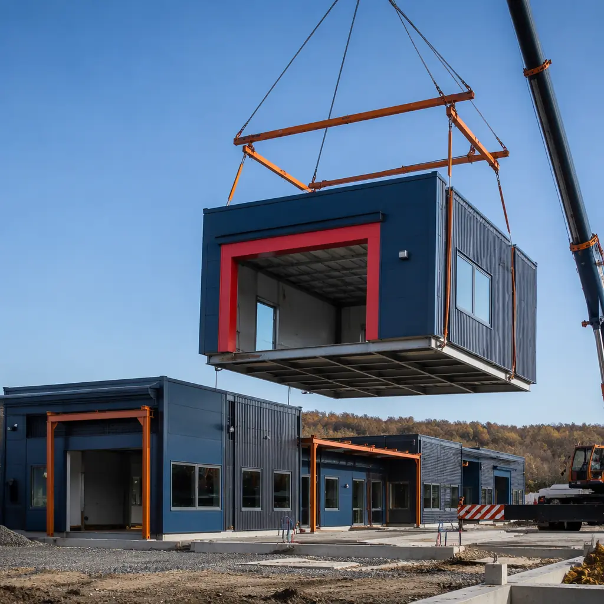
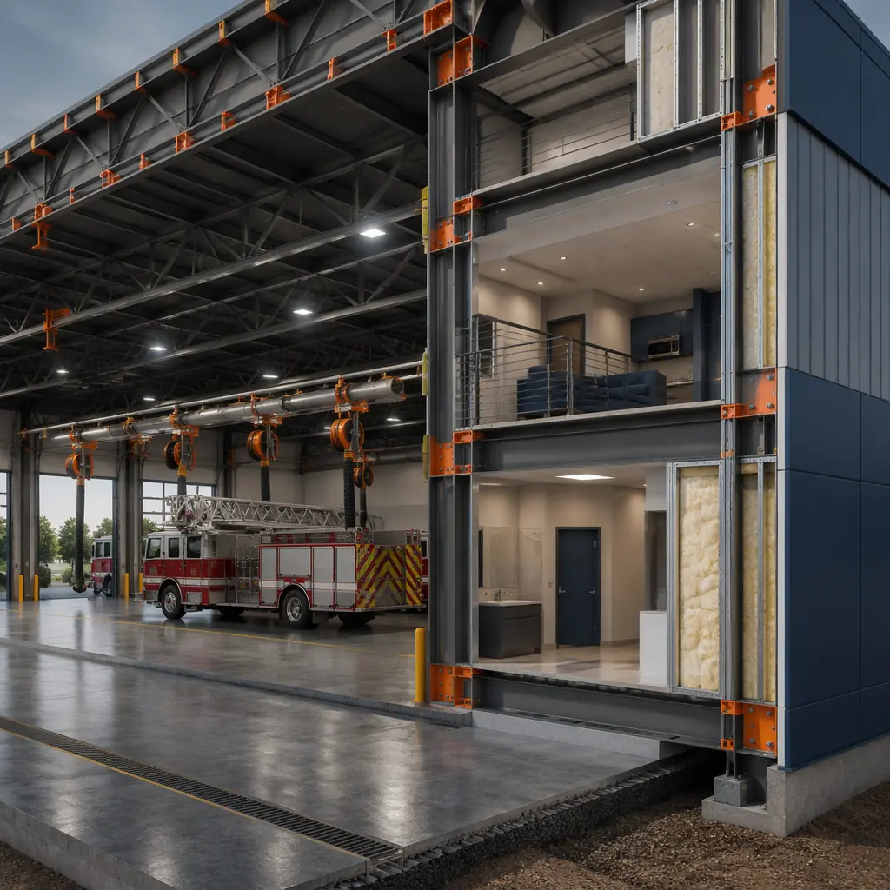
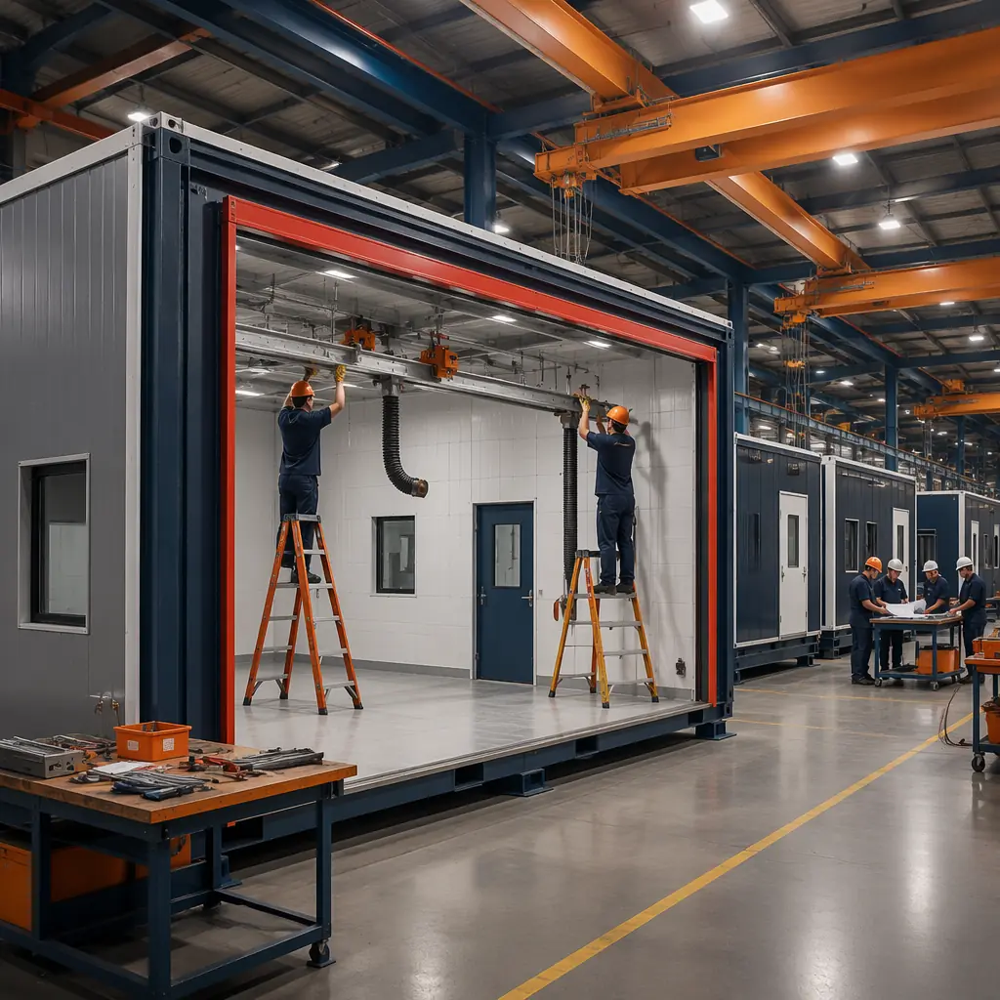
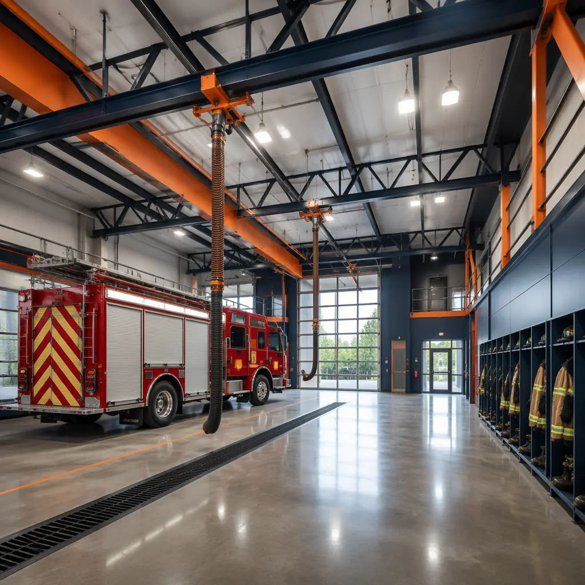

Fire stations are not ordinary buildings. They are 24/7 operational facilities that must combine heavy-duty apparatus bays with residential living quarters, decontamination zones, and emergency power systems — all while meeting National Fire Protection Association (NFPA) standards and local response-time mandates. When a municipality or fire district needs a new station, the clock is measured in response times, not construction schedules. Every month a fire station project spends in design review or site construction is a month that firefighters operate from temporary quarters or respond from a station that is too far away to meet the NFPA 1710 four-minute travel time standard. Modular fire station construction compresses the delivery timeline from 24–36 months to 12–18 months — without compromising the apparatus bay clear spans, diesel exhaust extraction, turnout gear decontamination, and live-in readiness that fire stations demand. This article examines how factory-built modules meet the specific requirements of fire station infrastructure: the design parameters for apparatus bays and the structural assemblies that support them, the regulatory pathway through NFPA and International Building Code (IBC) standards, the cost structure that municipal procurement teams and bond issuers need to evaluate, and the verification framework for ensuring module compliance before installation. For a broader overview of modular construction for public sector projects, see our guide to modular government and municipal buildings.

Why Fire Station Construction Takes So Long — And How Modular Changes the Equation
Fire station construction faces three structural barriers that modular production directly addresses: specialized bay requirements, multi-code regulatory overlap, and the operational disruption of building on or adjacent to active fire service sites. Understanding these barriers is essential for any fire chief or municipal procurement officer evaluating construction delivery methods.
Apparatus bays are not standard commercial spaces. A fire station apparatus bay must accommodate vehicles up to 12 feet wide, 40 feet long, and 12 feet tall with full vertical clearance for aerial ladder trucks. Bay doors require 14-foot clear openings, the floor must be sloped to trench drains with oil-water separators, and the bay ceiling must support suspended diesel exhaust capture systems with direct-source connections to each vehicle's tailpipe. In conventional construction, the bay is a steel moment-frame structure with fire-rated separation from the living quarters — a specialized assembly that accounts for 40–50% of the total building cost and requires coordination across structural, mechanical, and fire protection engineering disciplines. In modular construction, the apparatus bay is fabricated as large steel-framed modules in the factory. The exhaust capture system, trench drains, vehicle charging infrastructure, and compressed air/SCBA fill station piping are installed and pressure-tested in the factory before the module ships. The factory-built bay arrives on site with systems commissioned, not just roughed in.
Regulatory overlap creates multi-agency review cycles. A fire station must satisfy the state building code, the International Fire Code (IFC), NFPA 1500 (Fire Department Occupational Safety and Health), NFPA 1581 (Infection Control), NFPA 1582 (Medical Requirements), and local fire district design standards. Each regulatory layer imposes requirements that interact: for example, NFPA 1581's decontamination requirements affect HVAC zoning (the turnout gear storage area must be under negative pressure relative to living quarters), while NFPA 1500's fitness requirements affect the layout of exercise and training spaces. In conventional construction, these interactions are resolved through sequential design reviews — structural engineer submits to building department, fire marshal reviews for IFC compliance, fire district reviews for operational standards, each cycle adding 6–12 weeks. A conventional fire station may undergo 4–5 regulatory review cycles across 18–24 months before breaking ground. Modular construction collapses this timeline by pre-qualifying the module design: a fire station module configuration that passes a state fire marshal and NFPA review once can be approved for repeated production across multiple station projects within the same jurisdiction. The regulatory review happens at the prototype stage, not for every individual station.
Operational continuity is non-negotiable. When a municipality replaces an existing fire station, the firefighters must remain operational throughout construction. This means the existing station bays must stay accessible, the living quarters must remain habitable, and response times must not degrade. Conventional construction on an active fire station site requires temporary apparatus bays (rented tent structures or shipping containers converted to vehicle storage), temporary living quarters (modular office trailers with bunk rooms and kitchenettes), and continuous dust and noise mitigation — all of which can add $200,000–$500,000 to the project cost before the first foundation is poured. Modular construction concentrates the on-site disruption into a compressed installation window: the modules arrive over 4–8 weeks, are craned directly onto prepared foundations, and are connected to central utilities. The total number of days the fire station site is under active construction is reduced by 70–80%. Fire departments that have used modular for station replacement report that they maintained normal response times throughout the project — a claim few conventional construction projects can make. For insights on maintaining operational continuity during public safety construction, see our analysis of modular emergency response deployment.

Fire Station Design Requirements — From Apparatus Bay to Living Quarters
A modern fire station integrates three distinct functional zones, each with specific performance requirements that modular construction can meet through factory precision. Understanding these zones helps procurement teams evaluate whether a modular proposal addresses all operational needs rather than just delivering a generic building shell.
Apparatus Bay — The Operational Core
The apparatus bay is the most expensive and technically demanding portion of a fire station. The structural requirements for a two- or three-bay station include:
- Clear spans of 50–80 feet with no interior columns, to allow vehicle maneuverability and equipment access from all sides. Modular steel moment-frame assemblies achieve this through factory-welded connections that are ultrasonically tested before shipping. The structural performance is verified in the factory, not discovered during field erection.
- Floor slabs rated for 80,000-lb vehicle loads with point-load distribution at outrigger pads. The modular bay floor includes embedded anchor channels for future vehicle lift installation and sloped surfaces with 1/8-inch-per-foot fall to central trench drains.
- Diesel exhaust source capture systems with pneumatic or electromagnetic disconnect at each vehicle position. The overhead rail and hose drop assemblies are pre-mounted on the bay ceiling module and tested for airflow and capture velocity in the factory. NFPA 1500 requires direct-source capture for all apparatus that operate inside the station; modular construction ensures this system is integrated into the structure, not retrofitted after drywall.
- Vehicle exhaust and charging infrastructure for the growing electric fire apparatus fleet. Modular bays pre-install 480V three-phase conduits and transformer pads for DC fast charging of electric fire engines, which draw 150–350 kW per vehicle. Retrofitting this electrical capacity into a conventionally built station after the fact typically costs 2–3× the pre-installed cost.
Living Quarters — 24/7 Operational Readiness
Fire station living quarters must support 24-hour shifts with dormitory, kitchen, fitness, and administrative functions that meet NFPA 1500 health and safety standards. Modular construction addresses the specific requirements:
- Individual dormitory rooms with gender-separated layouts where required. NFPA 1500 recommends individual sleeping quarters to reduce sleep disruption and exposure to contaminants. Modular factory construction installs sound-rated wall assemblies (STC 50+) between dorm rooms and common areas during module assembly, achieving acoustic separation that field framing often fails to deliver.
- Commercial kitchen with crew dining capacity for 8–15 personnel per shift. Modular living quarter modules pre-install the kitchen exhaust hood with fire suppression system, the walk-in cooler electrical rough-in, and the gas line manifold — all pressure-tested before the module leaves the factory.
- Fitness and wellness spaces that NFPA 1583 requires for firefighter health maintenance. These spaces require rubberized flooring with 3-foot perimeter transitions, dedicated HVAC zones with higher air-change rates, and equipment anchoring points embedded in the floor slab. In modular construction, these are built into the module floor before finishing — no core-drilling through cured concrete on site.
Decontamination Zone — The Hot-Warm-Cold Transition
Cancer prevention has become the most urgent firefighter health initiative of the last decade. The International Association of Fire Fighters (IAFF) and the Firefighter Cancer Support Network have documented that firefighters have a 9% higher cancer diagnosis rate and a 14% higher cancer mortality rate than the general population, driven by carcinogen exposure through contaminated turnout gear. The modern fire station must include a decontamination zone that separates carcinogen-contaminated spaces from clean living quarters.
This zone follows a hot-warm-cold transition: the "hot" zone is the apparatus bay where contaminated gear is removed, the "warm" zone is the decontamination corridor with extractor washing machines for turnout gear and dedicated showers for personnel, and the "cold" zone is the clean living quarters. The HVAC system must maintain the hot zone at negative pressure, the warm zone at neutral pressure, and the cold zone at positive pressure — a cascade that requires careful ductwork zoning and air balancing. In modular construction, this pressure cascade is designed into the module's HVAC layout and tested in the factory with actual negative-pressure readings before shipping. A conventionally built station achieves this pressure cascade through on-site commissioning that frequently requires 2–3 rounds of adjustments after occupancy — each round exposing firefighters to uncontrolled airflows for weeks at a time.

Timeline Compression — From Municipal Bond Approval to First Response
The timeline advantage of modular fire station construction is not just about factory speed. It is about parallel workflows that eliminate the sequential dependencies that make conventional fire station projects drag across multiple budget cycles.
A conventional 3-bay, 10,000-square-foot fire station follows a sequence: site selection and acquisition (6–12 months) → architectural design and fire district review (8–14 months) → permitting and bidding (4–6 months) → site work and foundations (4–6 months) → construction (12–18 months) → commissioning and occupancy (2–3 months). Total: 36–59 months, or 3–5 years from concept to first response.
A modular 3-bay, 10,000-square-foot fire station overlaps these phases: while site work and foundations proceed on site, the apparatus bay modules and living quarter modules are being fabricated simultaneously in the factory. The module installation window is 4–8 weeks — a crane places the bay modules on prepared foundations, the living quarter modules are stacked and connected, and utility connections are completed at pre-planned interface points. Commissioning happens during the final 4–6 weeks as systems that were pre-tested in the factory are verified and integrated. Total: 14–24 months, a 50–60% reduction compared to conventional delivery. For a detailed comparison of modular vs traditional construction timelines across building types, see our 2026 cost and timeline comparison.
Cost Structure — What Municipalities Actually Pay
Fire station construction costs vary significantly by region, bay count, and apparatus type, but the cost structure follows consistent patterns that allow meaningful comparison between modular and conventional delivery methods. The following analysis uses a 3-bay, 10,000-square-foot prototype station common in suburban fire districts serving populations of 25,000–75,000.
| Cost Category | Conventional ($) | Modular ($) | Difference |
|---|---|---|---|
| Site preparation & foundations | $480,000 | $480,000 | — |
| Module fabrication (factory) | — | $2,200,000 | — |
| On-site construction | $3,150,000 | $440,000 | -$2,710,000 |
| MEP systems & commissioning | $620,000 | $420,000 | -$200,000 |
| Temporary facilities (during construction) | $350,000 | $55,000 | -$295,000 |
| Contingency (design/construction) | $410,000 | $210,000 | -$200,000 |
| Total Project Cost | $5,010,000 | $3,805,000 | -$1,205,000 (24% |
The 24% cost reduction ($1.2 million on a 3-bay station) comes from three sources: factory labor efficiency (specialized crews build the same module configuration repeatedly, achieving 30–40% higher productivity than site crews building a one-off station), reduced contingency (factory production eliminates weather delays and subcontractor coordination failures that account for 60–70% of conventional contingency drawdowns), and eliminated temporary facilities (the compressed 4–8 week installation window reduces the need for temporary apparatus bays and living quarters by 85%). For developers and public agencies evaluating the financial case, see our developer's guide to modular construction ROI and 2026 pricing guide by building type.
The cost advantage is particularly significant for fire districts that must issue general obligation bonds to fund station construction. A $1.2 million reduction in project cost translates to approximately $75,000–$90,000 per year in reduced debt service over a 20-year bond at current municipal rates (4.0–4.5%). Over the 50-year service life of a fire station, the total cost of ownership advantage of modular construction — including reduced maintenance from factory-quality MEP systems that have demonstrated 20–30% fewer first-five-year warranty claims — exceeds the initial construction cost savings.

NFPA Compliance — How Modular Meets Fire Service Standards
NFPA standards govern virtually every aspect of fire station design, from the width of apparatus bay doors (NFPA 1901) to the air-change rate in turnout gear storage rooms (NFPA 1851). Modular construction does not bypass these standards; it integrates them into the factory production process, where quality control is systematic rather than dependent on individual subcontractor performance.
NFPA 1500 (Fire Department Occupational Safety and Health Program). This standard establishes the minimum requirements for fire station facilities, including: separated dormitory rooms (Section 9.3.2), fitness and wellness facilities (Section 9.6), diesel exhaust emission control (Section 9.7), and infection control procedures during station construction (Section 9.11). In a modular fire station, these requirements are designed into the module layout and verified in the factory: exhaust capture systems are tested for capture velocity using smoke visualization, dormitory wall assemblies are tested for acoustic separation before finishing, and the hot-warm-cold pressure cascade is commissioned with actual readings. A conventional station verifies these requirements through field inspections that happen after construction is complete — at which point correcting a failed exhaust capture velocity test can require opening finished ceilings and rebalancing ductwork at significant cost.
NFPA 1581 (Infection Control). This standard requires the physical separation of contaminated turnout gear from clean living areas and mandates dedicated extractor washing machines. The modular decontamination corridor is pre-configured with: a gear extraction room with 40-lb capacity washer-extractors on vibration-isolated pads, a personnel shower room with decontamination shower and clean-side dressing area, and a clean gear storage room with forced-air drying racks. The corridor's pressure differential (negative on the hot side, positive on the cold side) is factory-tested and documented — providing the fire department with commissioning data before the first firefighter moves in.
NFPA 1901 (Automotive Fire Apparatus). This standard specifies apparatus dimensions that determine bay sizing. A standard pumper is 30 feet long, 8 feet wide, and 9.5 feet tall. An aerial ladder truck is 42–50 feet long, 8.5 feet wide, and 11 feet tall. The modular apparatus bay is designed around these vehicle envelopes with 4-foot clearance on all sides for equipment access and 2-foot clearance above the tallest vehicle to accommodate the exhaust capture rail and overhead door track. The bay floor is designed for the heaviest vehicle in the fleet (typically the aerial at 80,000 lbs fully loaded) with concentrated outrigger pad loads of up to 20,000 lbs per pad. Modular construction pre-installs the outrigger pad positions as thickened slab zones with supplemental rebar, eliminating the risk of field crews misplacing these critical structural elements.
Comparing Fire Station Construction Scenarios — When Modular Makes the Strongest Case
Modular fire station construction delivers the greatest advantage in three scenarios that represent the majority of current fire service construction needs in the United States and internationally. The decision framework below draws from 500+ MODURA modular building projects across public safety, healthcare, education, and government sectors. For fire station procurement teams evaluating modular for the first time, see our guide to modular construction financing and analysis of insurance and risk management for modular projects.
| Project Profile | Conventional Timeline | Modular Timeline | Time Saved | Modular Advantage |
|---|---|---|---|---|
| New suburban station (3 bays, 10,000 sq ft, greenfield site) | 36–42 months | 16–20 months | 50–55% | No operational disruption; fire district can select optimal site without adjacency constraints |
| Replace existing station (on active site, same footprint) | 42–54 months | 18–24 months | 55–60% | Temporary facilities cost reduced 85%; response times maintained throughout construction |
| Rural/volunteer station (2 bays, 5,000 sq ft, remote site) | 30–36 months | 14–18 months | 50–55% | Remote site logistics compressed into single module delivery window; reduced weather dependency |
| Satellite/EMS-only station (1 bay, 3,000 sq ft, infill urban site) | 24–30 months | 10–14 months | 55–60% | Infill site access constraints managed through concentrated delivery window; reduced neighbor disruption |
The replace-existing-station scenario is where modular delivers its strongest advantage. Replacing a 40-year-old fire station on the same site while maintaining emergency response capability is one of the most difficult construction challenges a municipality can face. The compressed 4–8 week module installation window means that the construction disruption — noise, dust, vehicle access limitations, and temporary facilities — is concentrated into a short, predictable period rather than spread across 3–4 years. Fire departments that have completed station replacements using modular methods consistently report that the operational disruption was measured in weeks, not years. For municipalities planning multi-facility public safety programs, also see our analysis of modular correctional facility construction and modular healthcare construction — public sector building types that share similar regulatory and operational continuity requirements.
Sustainability — Fire Stations That Model Environmental Leadership
Fire stations are high-visibility public buildings that serve as community anchors. When a municipality builds a fire station that achieves LEED certification, net-zero energy performance, or embodied carbon reduction, it sends a signal about the community's environmental values. Modular construction is uniquely positioned to deliver this performance because factory production eliminates the material waste, water intrusion, and construction defects that undermine green building performance in conventional construction.
Factory-built fire station modules achieve 60–80% less construction waste than site-built equivalents because materials are cut to precise dimensions using computer-controlled saws and offcuts are recycled in dedicated factory waste streams. The modules are built under roof, eliminating the moisture trapped in wall cavities that leads to mold and degraded insulation performance in site-built structures. And because the modules are transported as completed units, the number of construction worker vehicle trips to the site is reduced by 70–80% — a significant reduction in the project's construction-phase carbon footprint. For a complete analysis of modular construction's sustainability advantages, see our guide to sustainable modular building and our analysis of LEED certification for modular construction.
Is Modular Right for Your Fire Station Project?
Modular fire station construction is not the right solution for every project — but it is the right solution for a specific profile that represents the majority of current fire service construction needs: stations on constrained or active sites where operational continuity is critical, stations in growing communities where response time standards are driving new construction faster than conventional methods can deliver, and stations in regions where weather-dependent construction seasons (northern winters, southern hurricane seasons) make factory production under controlled conditions a decisive schedule advantage. Fire districts that have deferred station replacement for a decade or more — and are now facing NFPA compliance gaps, apparatus that no longer fit through bay doors designed for 1980s-era engines, and firefighter cancer risks from stations that lack decontamination zones — should evaluate modular as their default delivery method, not as an alternative to be considered after conventional estimates come in 30% over budget and 2 years behind schedule.
The modular fire station market is still developing, and not every modular manufacturer has the public safety construction expertise required. But for the manufacturers that do — and for the fire districts that evaluate them rigorously against NFPA standards and operational requirements — modular fire station construction offers a timeline, cost, quality, and safety proposition that conventional construction, after decades of cost overruns and delayed station openings, cannot match.